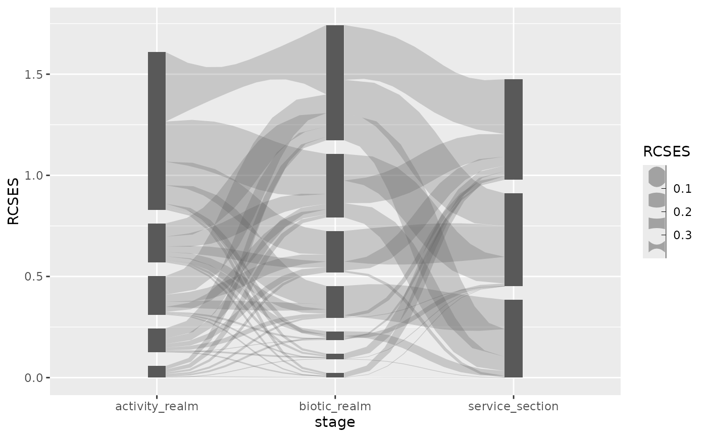

The waist scale can be used to control the waist (i.e., the width of the edge at its centre) of edges in Sankey diagrams, in order to put emphasis on specific edges.
Arguments
- ...
arguments passed onto underpinning scale constructors.
- range
A
vectorof twonumericvalues used to scale the waist in between. Should be>= 0.- values
a set of aesthetic values to map data values to. The values will be matched in order (usually alphabetical) with the limits of the scale, or with
breaksif provided. If this is a named vector, then the values will be matched based on the names instead. Data values that don't match will be givenna.value.- breaks
One of:
NULLfor no breakswaiver()for the default breaks (the scale limits)A character vector of breaks
A function that takes the limits as input and returns breaks as output
- guide
Guide to use for this scale. Defaults to
"none".
Value
Returns a ggplot2::Scale object which can be added to a ggplot2::ggplot to control the waist of Sankey diagram edges.
Details
This scale can be used to scale the centre of a Sankey edge. At one end of the scale the edge will be shaped like an hour glass, at the other end it will be shaped as an apple.
Examples
if (requireNamespace("ggplot2")) {
library(ggplot2)
data("ecosystem_services")
p <-
ggplot(ecosystem_services_pivot1, aes(x = stage, y = RCSES, group = node,
connector = connector,
edge_id = edge_id,
waist = RCSES)) +
geom_sankeyedge(v_space = "auto", ncp = 10) +
geom_sankeynode(v_space = "auto")
p + scale_waist_binned(range = c(0.1, 2))
p + scale_waist_binned(range = c(2, 0.1))
}
